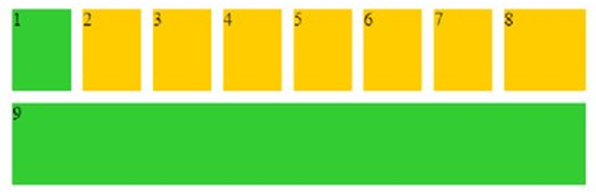
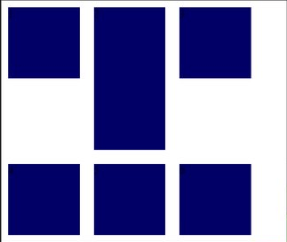
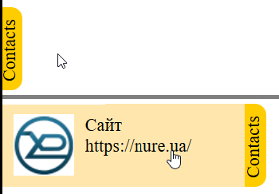
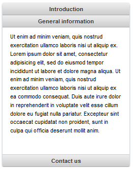
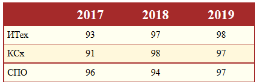
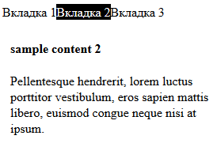
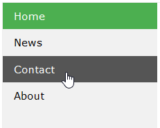
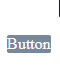

Лабораторна робота №2
Каскадні таблиці стилів
2.1 Мета роботи
- Вивчити принципи вбудовування каскадних таблиць стилів у документ, різновиди селекторів та особливості їх використання, познайомитись із поширеними стильовими властивостями.
- Вивчити способи позиціонування елементів.
2.2 Необхідні засоби
Для виконання лабораторної роботи рекомендується використовувати таке відкрите програмне забезпечення:
- редактор коду MS Visual Studio Code або будь-який інший, який знайомий користувачу і забезпечує підсвічування синтаксису (Notepad++, Sublime Text, Atom, Brackets и т.п.);
- браузер Mozilla Firefox або Google Chrome;
- СКВ Git (для роботи з сервісом GitHub потрібен доступ до мережі Інтернет).
2.3 Порядок виконання роботи
- Створити HTML-документ із довільним вмістом, на якому під час лабораторної роботи надалі демонструватиметься використання CSS. Має сенс відразу передбачити використання як блокових елементів, так і рядкових для майбутньої зручності.
- Показати у створеному документі такі способи використання каскадних таблиць стилів:
- inline-опис стилю (використовується атрибут style обраного вами елемента);
- за допомогою контейнера <style> у секції заголовка;
- підключити стильову таблицю, розташовану у зовнішньому CSS-файлі.
- Використовуючи селектори тегів, класів та ідентифікаторів, показати використання стилів (наприклад, для форматування тексту, зміни фону елемента тощо). Свідоме використання, крім зазначених, інших видів селекторів та їх комбінацій може стати в нагоді та спростити пошук відповідей на запитання щодо коду при отриманні відпрацювання або в ході захисту.
- Додати до документа елемент, для стилізації якого використовувати властивість position та властивості для вказівки зміщення положення елемента. Використовувати абсолютне, відносне чи фіксоване позиціонування.
- Додати до документа елементи, для стилізації яких використовувати властивість float. Зручно показувати цю властивість на прикладі розташування навігаційних елементів або при обтіканні текстом зображень.
- Додати у документ елементи згідно варіанту.
- Бути готовим до запитань стосовно вашого коду.
- Перевірити відображення створеного документа у різних браузерах.
- Внести до проекту вказані викладачем (при спробі отримання відпрацювання) зміни.
Завдання для лабораторної роботи є індивідуальними. Можливе спільне виконання у бригаді варіантів
усіх її учасників.
Номер варіанта студента вказано в
електронному журналі. Виконання чужого варіанту є підставою для відхилення роботи.
Відпрацювання виставляється після спільної зі студентом перевірки роботи проекту, виконаного відповідно до
всіх завдань цього розділу.
2.4 Варіанти завдань
Зверніть увагу, що завдання, які описані у цьому розділі, є лише
частиною роботи. Уважно читайте порядок виконання!
-
Додати на сторінку кілька елементів checkbox, оформлення яких (колір фону мітки, наприклад) залежить від стану.
Додати на сторінку контейнер з елементами, розміщеними згідно з малюнком. Використовуйте Flexbox.

-
Додати на сторінку перемикачі (елементи radio), оформлення яких залежить від стану.
Додати на сторінку контейнер з елементами, розміщеними згідно малюнку. Зверніть увагу, що в HTML-коді елементи розміщені по порядку "1", "2", "3", "4". А за допомогою Flexbox і CSS-властивості order, початковий порядок має бути змінений на той, що відповідає наведеному зображенню.
-
Додайте на сторінку список із власним маркером (зображення, символ або згенероване засобами CSS).
Додати на сторінку контейнер з елементами, розміщеними згідно з малюнком. Використовуйте Flexbox.

-
Додати на сторінку форму реєстрації користувача, оформлення полів якої залежить від коректності заповнення (знадобляться псевдокласи valid або invalid) та обов'язковості (також будуть у нагоді відповідні псевдокласи). Форма має бути центрована по горизонталі (розміщена по центру сторінки) та "не прокручуватися", тобто, позиція форми не повинна змінюватись при скролінгу сторінки.
-
Додати на сторінку прихований блок, який не змінюватиме свою позицію при прокручуванні сторінки, і у якого видно лише частину, по наведенню на яку блок розгортається повністю. Приклад на малюнку.

-
Використовуючи засоби CSS, додати на сторінку спойлер (accordion), що розкривається при натисканні. Приклад на малюнку.

-
Додати на сторінку зображення, розмір якого варіюватиметься залежно від розміру вікна браузера: при max-width: 1200px, ширина зображення становить 600px, а при max-width: 800px - всього 400px. Застосовувати директиву media.
Додати на сторінку таблицю, центрувати її по горизонталі. Таблиця має бути оформлена згідно з прикладом. Обов'язково використовувати псевдокласи.

-
Додати на сторінку елемент, що містить вкладки, що перемикаються. Приклад на малюнку.

-
Додати на сторінку вертикальне меню навігації на основі списку посилань. Стилізація передбачає зміну кольору фону для поточного посилання (припустимо, першого у списку) та посилання, на яке користувач наводить курсор миші. Приклад на малюнку.

Додати на сторінку кнопку, що "стрибає", використовуючи засоби CSS-анімації. Приклад на малюнку.

2.5 Зміст звіту
Звіт з лабораторної роботи повинен містити: мету роботи, варіант завдання, ескіз макета сторінки, вихідний код, зображення отриманого документа, висновки по роботі. Наявність звіту не є обов'язковою.
2.6 Контрольні запитання
- Що таке каскадна таблиця стилів?
- Для чого використовується CSS?
- Назвіть способи підключення CSS. Як відрізняється їхній пріоритет?
- У чому полягає каскадність таблиць стилів?
- Для чого проводиться скидання стилів?
- Що таке селектори? Види селекторів.
- У чому різниця між застосуванням селекторів класу та селектора ідентифікатора?
- Які вимоги до найменування класів?
- Чи можна вказати кілька класів для одного і того ж елемента?
- Для чого використовуються псевдокласи?
- Які є різновиди селектора атрибутів?
- Наведіть приклади псевдоелементів.
- Опишіть методи комбінування селекторів. Наведіть приклад вкладеного селектора.
- Які існують одиниці виміру в CSS?
- Як здійснити завдання кольору в CSS?
- Як вказати ширину блокового елемента засобами CSS?
- Які існують директиви (@-правила) у CSS?
- У чому відмінність директиви @media від застосування аналогічного атрибуту тега <link>?
- Якими є вимоги при використанні директиви @charset?
- Як підключити нестандартні шрифти?
- Навіщо застосовується директива @keyframes?
- Які засоби позиціонування елементів ви знаєте? У чому різниця між абсолютним та фіксованим позиціонуванням?
- Призначення властивості float.
- Яка властивість відповідає за зовнішній відступ у блокового елемента?
- Навіщо вказувати background-color, вже вказавши background-image?
- Яке значення має властивість background-color за замовчуванням?
- Що таке спрайти?
- Для чого використовується властивість border-top?
- Чи можна задати товщину для верхньої, правої, нижньої та лівої межі блочного елемента, вказавши у властивості border-width лише три, а не чотири значення?
- За допомогою якої властивості можна керувати величиною відступу першого рядка текстового блоку?
- Значення властивості display. У чому різниця між display: none; та visibility: hidden?
- Які переваги CSS Flexible Box Layout Module?
- Як, використовуючи CSS FlexBox, вказати напрямок головної осі?
- У чому різниця між властивостями align-content та align-items?
- Чи можна елемент флекс-контейнера самого зробити флекс-контейнером?
- Як перевірити підтримку стильової властивості браузерами?
- Призначення браузерних префіксів.
- Як визначаються змінні в CSS?
- Для чого потрібні препроцесори CSS? Що таке міксини та як їх використовувати?
Повернутися до початку сторінки